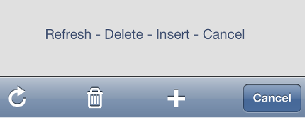
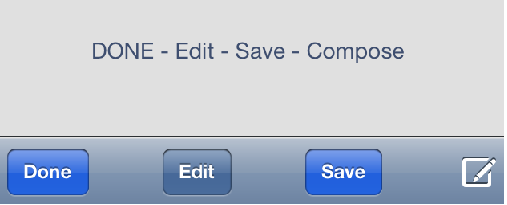
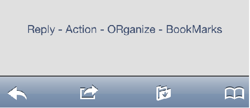
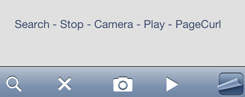
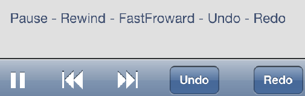
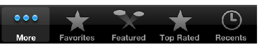

There are some images that the iOS framework provides as standard icons for actions and tabs. Follow this link to find more information about this and the iOS UI guidelines. Theese icons are used in many iOS native applications and an iOS user knows what this icons means. So if an application needs to represent one of this actions using this icons it is recommended to follow an standard and make the app familiar to any iOS user. The icons are differenced if they are used in Actions of the Application Bar or On Tabs. Application Bar icons:For the Actions on the Application Bar there are the following icons:      To use any of this icons in an iOS application in GeneXus the action has to be defined on the Application Bar with any of this names:
Dashboard Option icon with Tabs Control:For the items of a dashboard there are the following icons:  To use any of these icons on a Dashboard Option with tabs control the dashboard option has to have one of the following names:
|
| Backlinks |
| Images for Smart Devices applications |